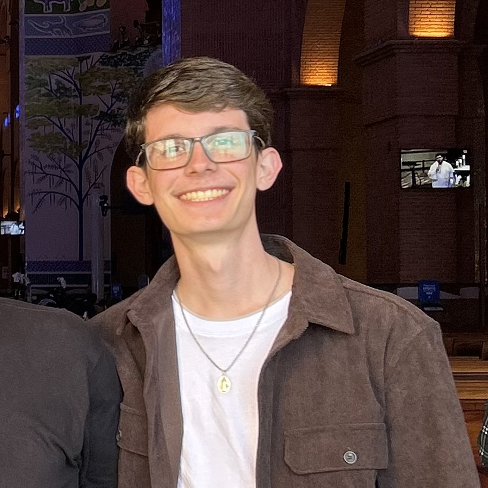

--- Portfolio pessoal ---
Pedro A. Sanches

Escolaridade
- Ensino médio no Colégio Gênesis (sistema Objetivo), de Álvares Machado (SP)
- Proficiência em Inglês nível C1 da Cambridge English
- Curso "Fundamentos de Inteligência Artificial Generativa - Google Cloud", pelo Senai SP
- Em andamento - Bacharelado em Ciência da Computação na Unoeste, em Presidente Prudente (SP)

Áreas de interesse profissional
- Mercado financeiro e de capitais
- Desenvolvimento de softwares
- Hardware e design de produtos
- Integração entre TI e esportes

Áreas de interesse pessoal
- Futebol masculino e tênis masculino em simples
- História do Brasil e história da Europa
- Operação de empresas nacionais e multinacionais
- Situação dos mercados financeiros e de capitais

Contato
- E-mail: pedrosanches.06@icloud.com
- LinkedIn: Pedro Andrade Sanches